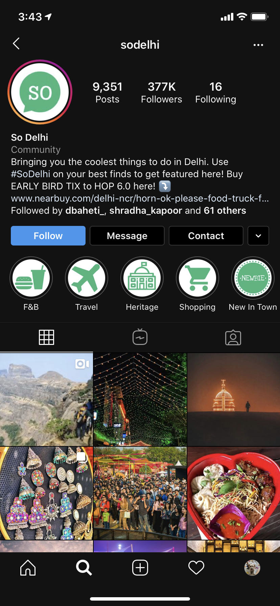
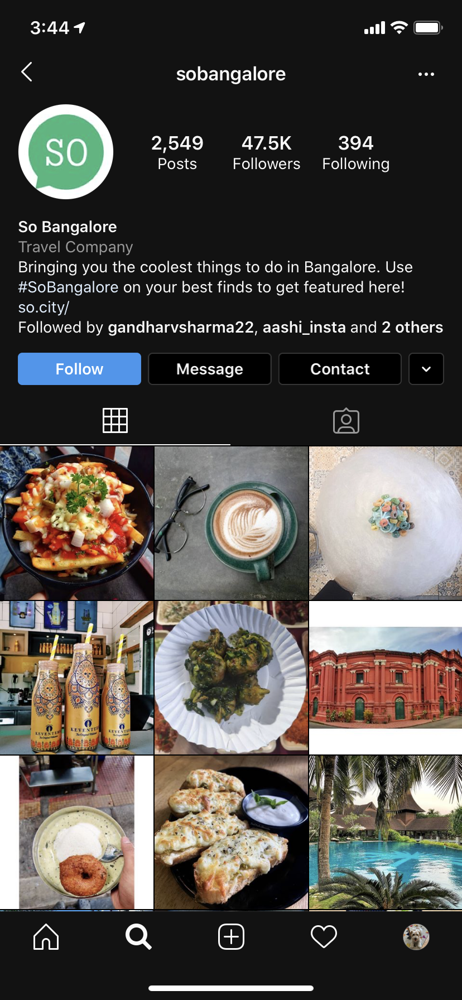
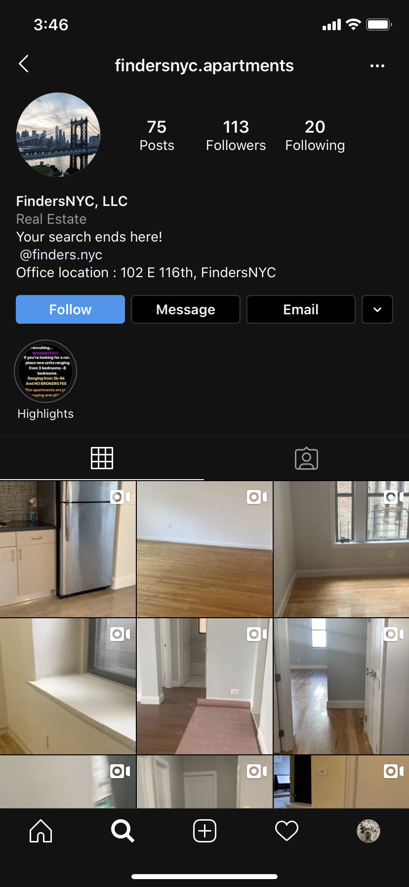
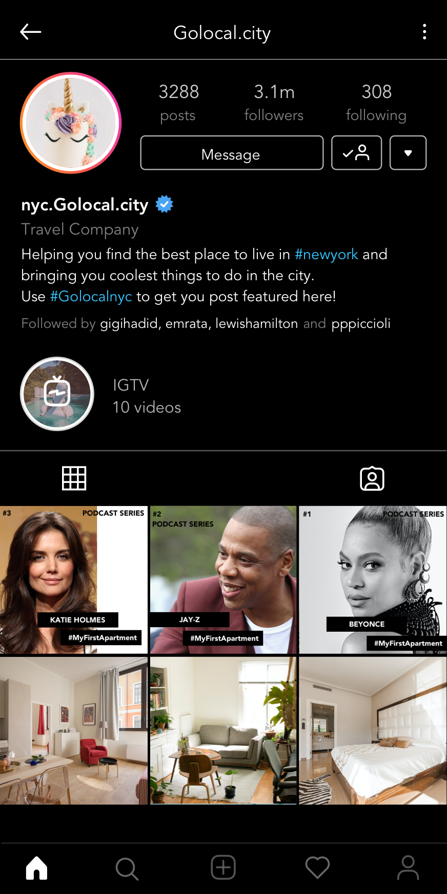

Guiding Questions
After exploring the problems that can probably be solved through apps and websites using AR/VR. I want to
explore another side of the story.
- How to build the community for people who are new to that particular state/country?
- How can they know about the things that local people living there know?
- How can I provide them the information about that city/state?
Concept
As my research question targets the international students, who are most of them young and are on
instagram.
So, I came up with an idea of building a community to help people who are coming to any city(in this case,
New York) can follow the page where they can get information regarding homes/rooms/roommates available and
great things to check out in the city.
I got this idea when I was going through my feed, and so this post by "sodelhi". This company has made its
Instagram handle for every city, and they are building community in every state with the help of people.
People tag them in their post or use their hashtags to get featured. From which they get to know and make
people aware of that.

Every day there is a new event happening or a new cafe is opened in Delhi, I get to know from this place. When I was traveling to Bangalore, I followed their "sobangalore" page to know things to do/ or go to places in Bangalore.

So, I thought of coming up with the idea to make an Instagram page where people can tag in their posts or can use the hashtags to get featured on our page.Not only great things to do, but collaborating with co-living spaces, letting people know about them and real estate companies to help them get their place filled and also helping people to find their place.
Apart from this, I thought collaborating with celebrities/influencers to have a podcast regarding #MyFirstApartment asking them about their first apartment experience. So, people can trust that page, and it get verified as well.
I named that page as "nyc.GoLocal.city". So, I can link my website (Prototype-3) with it as "GoLocal.city".
